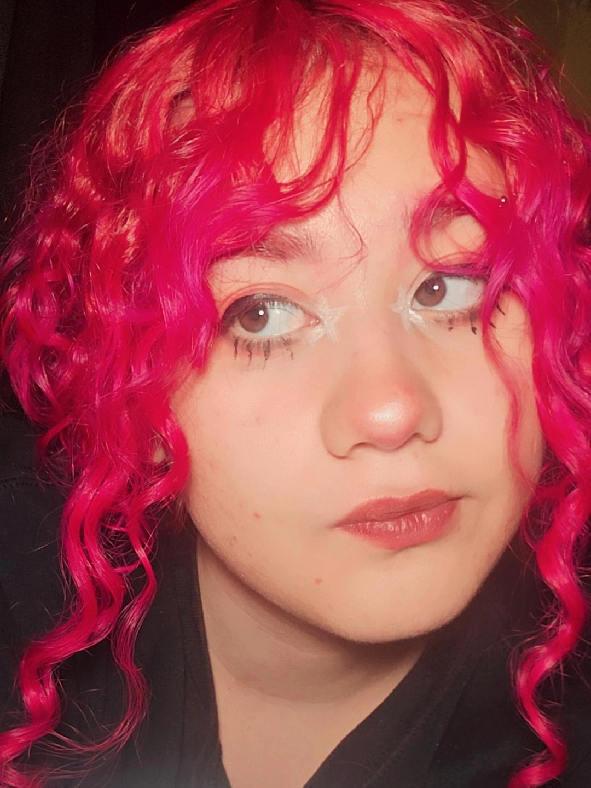

Illustrator · Photographer · Designer
Hello!
I'm Ari, an aspiring designer specialized in illustration, currently studying Diseño y
Comunicación Visual at FES Cuautitlán, UNAM. My work is shaped by a deep fascination
with ornate detail, strong character design, and intentional aesthetics, heavily influenced by
the expressive white pupils and bold figure work of Kohei Horikoshi, the refined facial
structure and elegance of Yana Toboso, and the intricate linework and detail-driven
compositions of Tetsuya Nomura and Alphonse Mucha.
Technical ability is at the core of what I do. I have a trained eye for observation and color,
and a strong capacity for replication and detail. Beyond illustration, I'm currently expanding
my practice into 3D modeling and animation, and I adapt quickly to new tools and software,
always looking for ways to grow and push my work further.
¡Hola!
Soy Ari, diseñadora en formación especializada en ilustración, actualmente estudiando
Diseño y Comunicación Visual en la FES Cuautitlán, UNAM. Mi trabajo está marcado por
una profunda fascinación con el detalle ornamental, el diseño de personajes y una estética
intencional, fuertemente influenciada por las expresivas pupilas blancas y el trabajo de
figura de Kohei Horikoshi, la elegancia y estructura facial refinada de Yana Toboso, y las
composiciones de trazo intrincado y detalle minucioso de Tetsuya Nomura y Alphonse
Mucha.
La habilidad técnica es el núcleo de lo que hago. Tengo un ojo entrenado para la
observación y el color, y una gran capacidad para la replicación y el detalle. Más allá de la
ilustración, actualmente estoy expandiendo mi práctica hacia el modelado 3D y la
animación, y me adapto rápidamente a nuevas herramientas y software, siempre buscando
crecer y llevar mi trabajo más lejos.
